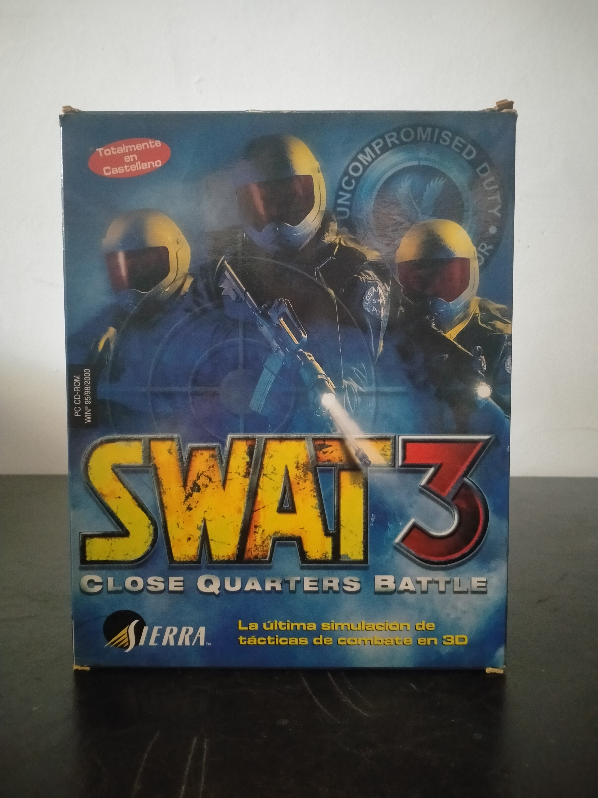

Ficha #000127
SWAT 3: Close Quarters Battle
SWAT 3: Close Quarters Battle es un shooter táctico en primera persona desarrollado por Sierra Northwest y publicado originalmente en 1999. Ambientado en Los Ángeles en el entonces futurista año 2005, sitúa al jugador al mando de una unidad de cinco agentes del equipo SWAT del Departamento de Policía de Los Ángeles durante una serie de intervenciones relacionadas con terrorismo, secuestros y amenazas contra la firma de un tratado internacional de desarme nuclear. Frente al enfoque puramente ofensivo de otros títulos de acción, exige valorar la amenaza, seguir procedimientos policiales, proteger a civiles, detener sospechosos y emplear fuerza letal únicamente cuando resulte necesario. Su motor tridimensional utilizaba tecnología de celdas y portales, mientras que la inteligencia artificial permitía impartir órdenes al equipo y afrontar situaciones variables mediante aproximaciones sigilosas o entradas dinámicas. La colaboración del equipo de desarrollo con miembros del LAPD SWAT y el uso de captura de movimiento contribuyeron a su orientación realista. Esta edición española en caja grande, distribuida por Havas Interactive España y completamente localizada al castellano, documenta el lanzamiento original anterior a las posteriores ediciones Elite y Tactical Game of the Year.
- Formato
- Big Box
- Plataforma
- Win95 Win98
- Género
- Shooter táctico en primera persona Simulación policial Táctica en tiempo real Acción
- Serie
- Todos Big Box
- Desarrollador
- Sierra Northwest
- Distribuidor
- Sierra Studios, Havas Interactive España
- EAN
- —
Contenido de la edición
- Caja Big Box
- CD-ROM en caja jewel case
- Manual de instrucciones
- Tarjeta postal de Sierra Number 1 Club
Preservación
- Protección
- No determinado
- Formato recomendado
- BIN/CUE
- Jugable en virtualización
- Sí
Se recomienda crear una imagen completa del CD-ROM original y conservar digitalizados el manual y la documentación específica de la edición española. Ante la ausencia de una identificación concluyente del sistema anticopia de esta tirada, conviene realizar una imagen BIN/CUE y verificar su instalación y ejecución en una máquina virtual con Windows 95 o Windows 98.